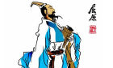
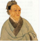
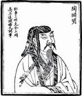
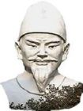
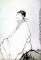

文学城
文学渊源

文学源于文学是以语言文字为工具，形象化地反映客观现实、表现作家心灵世界的艺术，包括诗歌、散文、小说、剧本、寓言童话等，是文化的重要表现形式，以不同的形式即体裁，表现内心情感，再现一定时期和一定地域的社会生活。作为学科门类理解的文学，包括中国语言文学、外国语言文学及新闻传播学。文学是人文学科的学科分类之一，与哲学、宗教、法律、政治并驾于社会建筑上层。它起源于人类的思维活动
中国历史上十大文学家排名

屈原: 基本简介 屈原 屈原是中国最伟大的爱国主义诗人之一，也是中国已知最早的著名诗人和伟大的政治家。他创立了“楚辞”这种文体（也就是创立了“词赋”这一文体），也开创了“香草美人”的传统。《离骚》《九章》
进入词条

司马迁: 简介西汉史学家 司马迁、文学家。字子长，左冯翊夏阳（今陕西韩城西南靠近龙门。所以司马迁自称"迁生龙门"《太史公自序》龙门，龙门山，很有名气。传说大禹曾在龙门开山治水。龙门山的南面是黄河。司马迁的家正好 [进入词条] 进入词条

陶渊明:身世背景 陶渊明 陶渊明的时代是在典午大乱之后，正当刘裕篡晋的时候。他生在一个衰落的世家，是否是陶侃（东晋开国元勋，军功显著，官至大司马）的后人固有问题，但至少是他的近房裔孙；祖父做过太守；他的父亲 [进入词条]进入词条

李白:
简介 李白（七零一－七六二），字太白，号青莲居士。祖籍陇西成纪（今甘肃天水附近），先世于隋末流徙西域，李白即生于中亚碎叶（今中亚巴尔喀什湖南面的楚河流域，唐时属安西都户府管辖）。幼时随父迁居绵州昌隆进入词条

杜甫: 杜甫（712—770），字子美，自号少陵野老，杜少陵，杜工部等。中国古代伟大的现实主义诗人，号称“诗圣”。一生写诗一千四百多首。原籍湖北襄阳，生于河南巩县。远祖为晋代功名显赫的杜预，乃祖为初唐诗 [进入词条] 进入词条
简介： 中国古典文学分为诗和文，文又分为韵文和散文，现代一般分为：诗歌、散文、小说、戏剧，并称为四大文学体裁；中国的抒情诗和散文（称为古文）最早而比较发达。西方则分为诗歌与散文两个基本类型。叙事诗和戏剧成熟较早，此外小说比较发达。